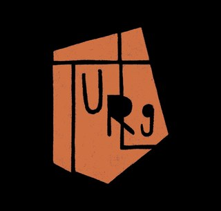

Saison 2026 – 2027
Réservation
Les prochaines dates
Pas de date annoncée pour le moment
La prochaine saison se prépare. Suivez-nous sur Instagram pour être les premiers au courant.
Nous suivre sur Instagram
Où nous voir
Nos salles à Liège

Théâtre Universitaire Royal de Liège (TURLG)
Notre plus grande et plus belle salle, à deux pas de la place du Vingt-Août.
À la Courte Échelle
Une salle liégeoise à taille humaine, idéale pour les formats courts et les soirées plus intimes.
Sur mesure
Aucune date ne vous convient ?
Nous pouvons aussi venir jouer chez vous, pour votre entreprise, votre école, votre association ou votre fête.
Demander un spectacle